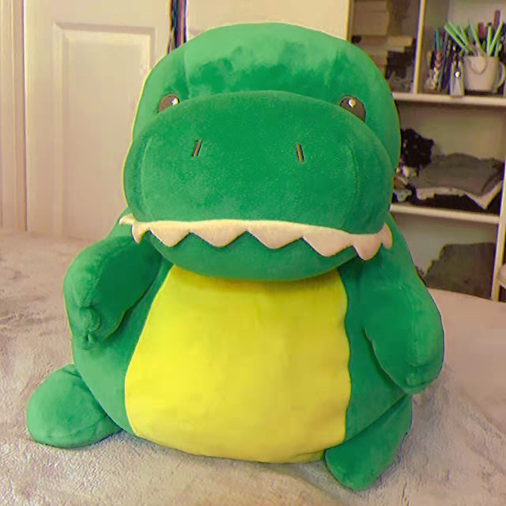

dino
my origin story:
I was born at the end of the Crustaceaus era. Back then there were no continents, only
Pangaea. At the time, I lived with my mother in a cave by a lake. Things were so simple
back then, without any stupid humans and their nasty living habits. The air was crisp, the
water was crisp, and I could spend the entire day doing wahtever I wanted. I spent my days
tanning in the sun, playing with the other dinos, hunting for prey, napping in a hammock,
and frolicking in the grass meadows.
Life was great! But then, The Asteroid hit...
I remember it like it was yesterday. All of a sudden, the sky turned orange, and the air began
to become thick, hot, and smoggy. Every dinosaur in my village was panicking, including me.
We saw ash fall from the sky, and we could see the mountains in the distance beginning to erupt,
lava flowing at an astonishing rate. Our entire village huddled in the town council, trying to decide
what to do. Someone kept yelling that this was going to be the end of the world. We all laughed.
But boy were we wrong.
Our leader decided it was best for us to get to higher ground and wait out what we thought was just
a storm. My mother went to help the younger kids find their parents, and she led them up to the nearest
tall hill. She told me to wait by the willow tree and that she would be back as soon as she could to get me.
I watched her leave, and I waited. As I waited I felt the air getting thicker. Sparks began to fall from the sky.
Everything was so hot. My friends suddenly began fainting right beside me and I couldn't help them. I began
feeling my bones weaken as well. I watched as everything and everyone around me broke out into chaos. Family
members were eating eachother, my fellow dinosars were dropping dead left and right, all the while I
was waiting for my mother to return. I waited days. Soon everyone was gone, and I was the only one to escape.
By this point the lava had reached our vilalge. Everything was destroyed. I ran and ran and ran. I ran across
an entire desert just trying to escape the radiation. Soon I felt my bones become so weak that I could no longer move.
My eyes were burning, my scales were flaking off. I finally layed down on the sand and accepted my death.
Except I wasn't dead. I woke up nearly 65 million years later. The year was 2017, and I was on the shelf of a HomeGoods
store. I was no longer the 20 foot tall beast I was before. The radiation had shurnk me to a soft plush like creature.
My scales were gone, my teeth wre now felt, and I had the fattest stomach every imaginable. I noticed how soft and
huggable I was.
I spent many days in the store, until finally one day, a young girl came and walked past my shelf. She picked me up, examined
me, gave me a few hugs, and sayd "I'm taking you home with me." That was the day I was adopted by my new family. Now I have
two amazing aunties who raise me, and I've also become their therapy animal. I live anawesome life in Shanghai, and I am super
famous on social media. Could the life of a 65 million year old dino get any better?
